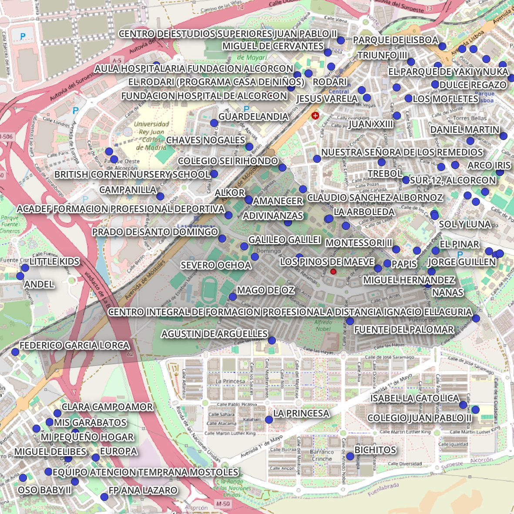

Puntos de interés en el territorio parroquial
Parroquia Santo Domingo de la Calzada (Alcorcón) · Arciprestazgo de Alcorcón
Entidades religiosas no católicas
No hay ninguna entidad religiosa no católica en el territorio de esta parroquia.
Centros educativos

20 centros educativos en el territorio de la parroquia (público: 15, privado: 3, privado concertado: 2).
| Centro | Tipo | Titularidad | Domicilio | Web |
|---|---|---|---|---|
| ADIVINANZAS | Escuela infantil | Público | Calle de las Palmeras, 1, 28922 Alcorcón | Página web |
| ALKOR | Centro privado de educación infantil, primaria y secundaria | Privado concertado | Avenida de Pablo Iglesias, s/n, 28922 Alcorcón | Página web |
| AMANECER | Centro privado de educación infantil, primaria y secundaria | Privado | Avenida de Pablo Iglesias, s/n, 28922 Alcorcón | Página web |
| BLAS DE OTERO | Colegio de educación infantil y primaria | Público | Avenida del Oeste, 4, 28922 Alcorcón | Página web |
| CARMEN CONDE | Colegio de educación infantil y primaria | Público | Avenida del Oeste, 2, 28922 Alcorcón | Página web |
| CLAUDIO SANCHEZ ALBORNOZ | Colegio de educación infantil y primaria | Público | Calle de Claudio Sánchez Albornoz, s/n, 28922 Alcorcón | Página web |
| COLEGIO SEI RIHONDO | Centro privado de educación infantil, primaria y secundaria | Privado concertado | Avenida de Pablo Iglesias, 2, 28922 Alcorcón | Página web |
| EL PINAR | Instituto de educación secundaria | Público | Calle del Parque Ferial, s/n, 28923 Alcorcón | Página web |
| FERNANDO DE LOS RIOS | Colegio de educación infantil y primaria | Público | Avenida del Oeste, 4, 28922 Alcorcón | Página web |
| FUENTE DEL PALOMAR | Colegio de educación infantil y primaria | Público | Calle de Camilo José Cela, 2, 28922 Alcorcón | Página web |
| GALILEO GALILEI | Instituto de educación secundaria | Público | Avenida de Retamas, 2, 28922 Alcorcón | Página web |
| LA ARBOLEDA | Instituto de educación secundaria | Público | Avenida del Oeste, s/n, 28922 Alcorcón | Página web |
| LOS PINOS AYELEM | Escuela infantil privada | Privado | Calle de los Pinos, 16, 28922 Alcorcón | Página web |
| LOS PINOS DE MAEVE | Escuela infantil | Público | Calle de los Pinos, 13, 28922 Alcorcón | Página web |
| MAGO DE OZ | Escuela infantil | Público | Calle de los Madroños c/v Los Robles, s/n, 28922 Alcorcón | Página web |
| MIGUEL HERNANDEZ | Colegio de educación infantil y primaria | Público | Calle PABLO NERUDA, s/n, 28922 Alcorcón | Página web |
| NANAS | Escuela infantil | Público | Calle Pablo Neruda, 3, 28922 Alcorcón | Página web |
| PAPIS | Escuela infantil privada | Privado | Calle de los Pinos, 60, 28922 Alcorcón | |
| PRADO DE SANTO DOMINGO | Instituto de educación secundaria | Público | Avenida ESTEBAN MARQUEZ, 3, 28922 Alcorcón | Página web |
| SEVERO OCHOA | Colegio de educación especial | Público | Calle de los Robles, 4, 28922 Alcorcón | Página web |
Fuente: registro de centros educativos de la Comunidad de Madrid. Solo se recogen los centros de alta.